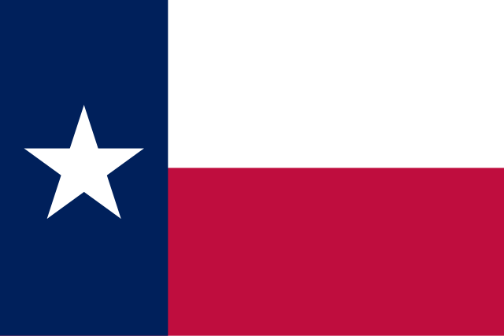

About Me
Hello! My name is Gavin Nelson and I currently live in Texas with my family. I'm currently unemployed at the moment, but my hope is that these courses I'm taking will help me come closer to a career in software development. My hobbies includes writing, movies, and video games. My biggest dream is to one day start my own video game development company. I love my family and I'm so grateful for all the love and support they've given me as I've enrolled in BYU-Pathway.
Texas

Texas is the biggest state in the continental U.S. It is known for many things, such as; It's culture, which comes from a diverse mix of European, Hispanic, and Native American cultures; Being home to many Fortune 500 companies including AT&T, ExxonMobil, and Dell Technologies; Tex-Mex Cuisine; and just an all-around friendly community. It's also home to H-E-B, which I believe is the best state-wide supermarket chain in the country. Texas to me seems like a wonderful place to live.